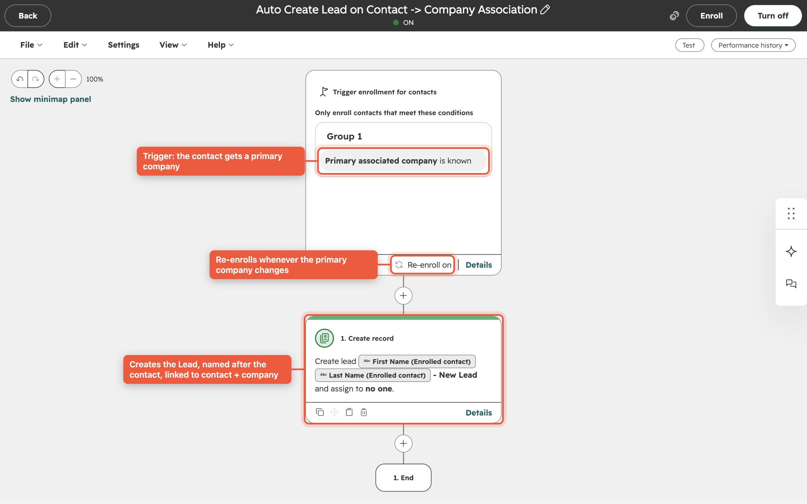
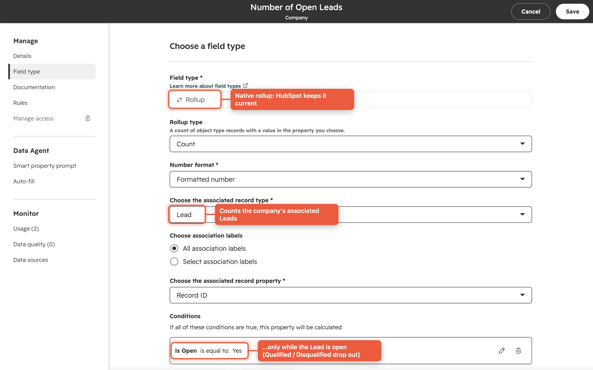
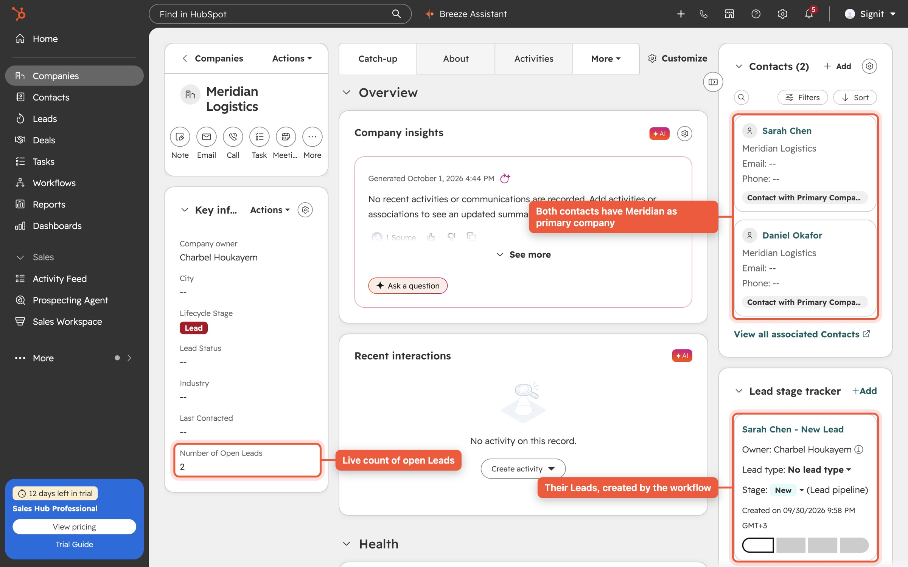
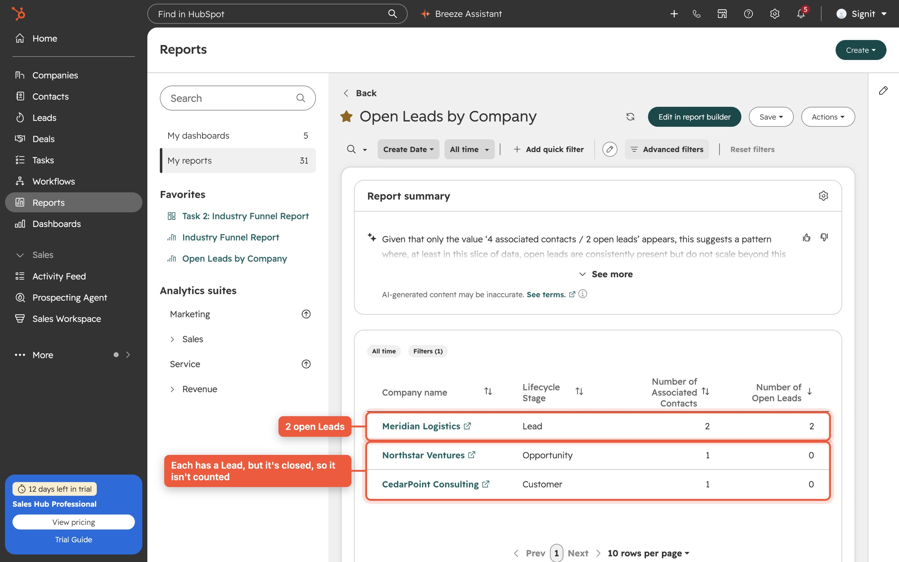
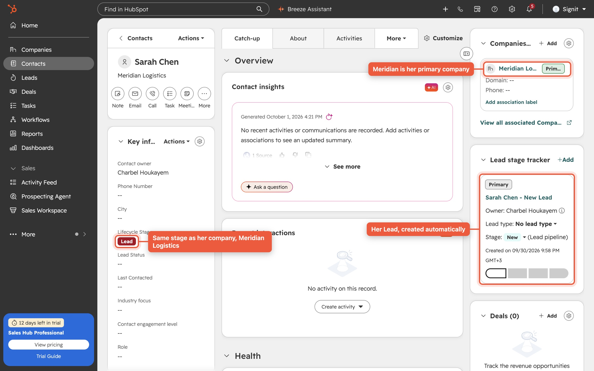
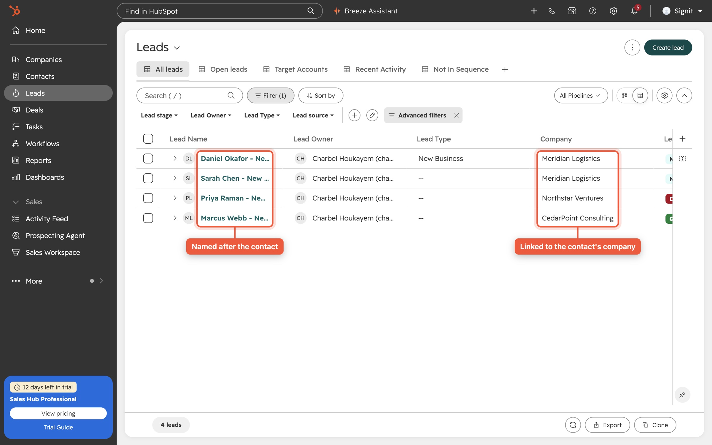
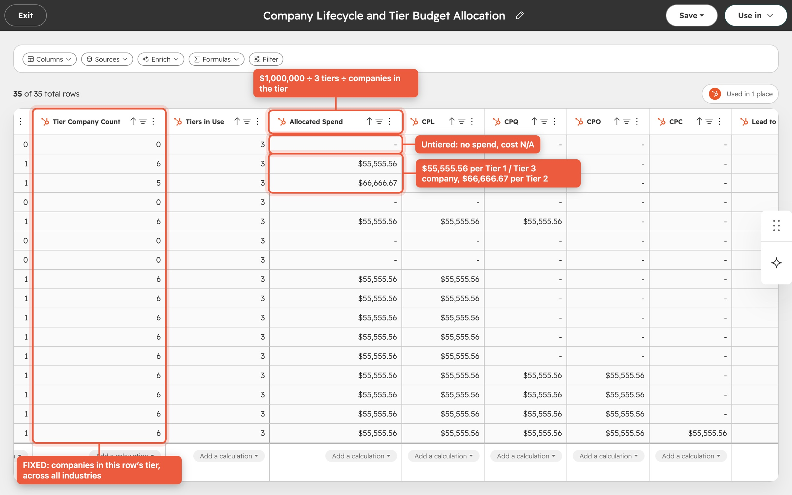
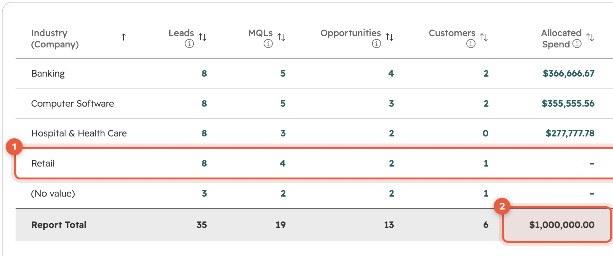
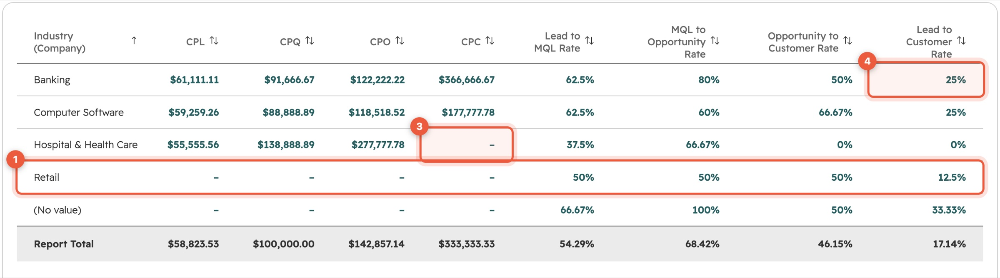

Leads that create themselves, and a funnel that prices itself
I chose Task 1 as my submission and also built Task 2, because together they cover the full revenue loop: how pipeline is created, and what it costs per industry. Both run live in a HubSpot portal on native features, with no external scripts and no manual steps. Every screenshot below is from that portal, and you can try both behaviours yourself on this page.
Explore the live portal. If you've been given access, every screenshot below links to the real thing in HubSpot. The Signit RevOps Assessment dashboard has both reports side by side.
Open the dashboard ↗Lead Creation & Lifecycle Alignment
A workflow creates the Lead, a rollup counts only open Leads, and the contact's stage follows its company.
Task 2 · additionalIndustry Funnel Report (ICP-based)
One auto-updating table: funnel volume, CPL/CPQ/CPO/CPC and conversion rates per industry, with $1M allocated by ICP tier.
Lead Creation & Lifecycle Alignment
- When a contact becomes associated with a company, create a Lead associated with both.
- Show a count of open Leads on the company, usable in reports.
- Keep the contact's Lifecycle Stage equal to the company's (Lead, MQL, Opportunity, Customer).
- Fully automated and scalable, with no manual intervention.
Click any screenshot to enlarge it. I built it from three native HubSpot components, each owning one job. That keeps it transparent, so any admin can open it, read it and maintain it, and it scales with HubSpot rather than with a server someone has to keep running.
1 · The workflow that creates the Lead

Contact-based workflow
It enrolls a contact the moment it has a primary company, and re-enrolls whenever that primary company changes. One action creates a Lead named after the contact, starting at the New stage.
- Trigger: Primary associated company is known
- Re-enrollment: when the primary company changes
- Action: Create record → Lead, linked to the contact; HubSpot links it to the primary company
2 · The open-Lead count on every company
"Number of Open Leads": a native rollup
A Company property that counts associated Leads where Is Open = Yes. Qualified and Disqualified Leads drop out automatically, and moving a Lead back to an open stage brings it back.



3 · Lifecycle alignment

Company drives the contact
I configured the portal's four lifecycle stages to the brief's mapping and enabled HubSpot's native Sync lifecycle stages. When a company moves to MQL, Opportunity or Customer, every contact that has it as primary company moves with it, typically within 10 seconds.

Try it: the Task 1 behaviour
A faithful model of how the portal behaves, using the same rules and the timings I measured. Associate a contact, close or reopen its Lead, and move the company through its stages.
Contacts (primary company = Meridian)
Number of Open Leads
Leads
How I verified it
I ran a scripted end-to-end test against the live portal with fresh records, read back every result through the API, then removed the test data.
From association to a Lead linked to both contact and company, exactly one.
Open-Lead count when the Lead was disqualified, then reopened (~11 s each).
Company stages (Lead → MQL → Opportunity → Customer) the contact followed.
Duplicate Leads when the same association was sent again (tested twice).
Design decisions and where I'd take it next
Secondary companies
HubSpot has no "association added" trigger, and I confirmed in the workflow editor that a company workflow can't target the contact that was just linked. So I scoped Lead creation to the primary company, which is how HubSpot itself models Leads. For organisations where one contact works with several accounts, the upgrade is one company workflow on Number of Associated Contacts with a short custom-code step that checks every contact–company pair and creates only the missing Leads (Data Hub Professional).
Lifecycle moves in one direction
Native sync pushes company stages to contacts going forward, which suits a normal funnel. If Signit needs backward corrections (for example a churned customer), I'd add a company workflow that clears and resets the stage on its primary contacts. I designed it, and I'd confirm the business rule before switching it on.
A Lead means MQL
HubSpot's "set lifecycle stage when a lead is associated" setting moves a new Lead's contact and company to MQL. I kept it because it matches how Leads are usually worked, and it's one setting to change if Signit defines MQL differently.
Industry Funnel Report (ICP-based, Companies)
- One auto-updating table grouped by Industry: Leads, MQLs, Opportunities, Customers.
- $1,000,000 acquisition spend, divided evenly across ICP tiers. Untiered companies get no spend, and their cost shows N/A.
- CPL, CPQ, CPO, CPC, and Lead→MQL, MQL→Opportunity, Opportunity→Customer, Lead→Customer.
How I read the brief
Definitions
- CPQ = cost per MQL (qualified lead), so the four costs map to the four stages.
- Funnel counts are cumulative: a Customer also counts as a Lead, MQL and Opportunity, even if it skipped a stage. That's what makes the conversion rates meaningful.
- Spend: $1M ÷ tiers in use (3) = $333,333 per tier, then split equally across the companies in that tier.
- Costs divide by tiered companies only, matching "untiered = no spend". Rates use every company.
The hard part
An industry's spend depends on how many companies are in each tier across all industries. A report grouped by Industry only sees its own rows: Banking sees its two Tier 1 companies, never the six in total.
FIXED. A FIXED calculation computes a total at a level I choose and ignores the report's grouping. Each company row carries its tier's portal-wide count, so the report can allocate spend correctly, with no helper records, no workflows and nothing hard-coded except the $1M budget the brief sets.The dataset: logic in one place
Dataset "Company Lifecycle and Tier Budget Allocation". It has no filter, so a tiered company without an industry still consumes its share of the budget.

The report in HubSpot: full table
"Industry Funnel Report", saved in the portal, shown in two halves so every column is readable.


Try it: the report, live
This table follows the dataset's exact logic on the portal's current data. Change any company's ICP tier below and watch spend and costs re-price across every industry. That's the FIXED tier total at work, and the real report behaves the same way (it refreshes within 1–2 minutes).
How I verified it
Report cells matching values I recomputed independently from raw CRM data.
Total allocated, to the cent, before and after changes.
For the live report to re-price after a company's tier changed. Verified, then reverted.
One dependency to flag
Dataset FIXED calculations need HubSpot Data Hub Professional. Without it, HubSpot reports can't see totals across groups, so the alternative would be to stamp tier totals onto companies on a schedule, which is less elegant and never quite real-time.
How I worked
Native first
Workflows, rollups, lifecycle sync and datasets: everything an admin can open and understand. No servers, no scheduled scripts, nothing that breaks when someone leaves.
Proven, not assumed
Each requirement has a live test with measured timings. Where HubSpot's documentation was silent, I checked the behaviour in the product itself before relying on it.
Honest about limits
Where the platform draws a line, I document it and bring a concrete next step, so the decision is a business one, not a surprise.